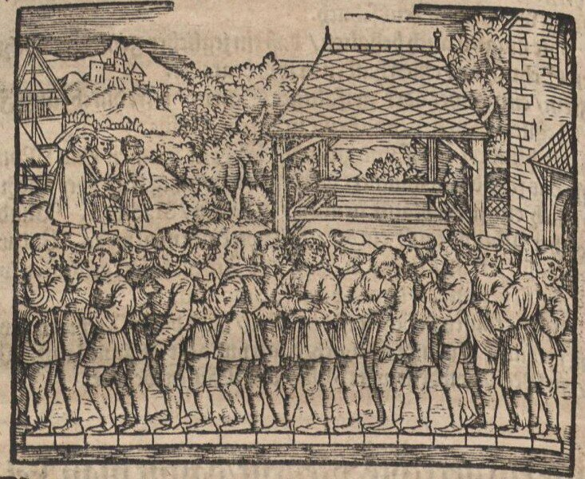
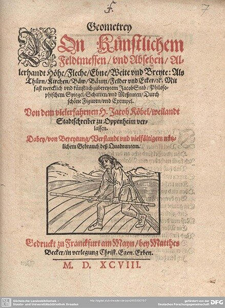
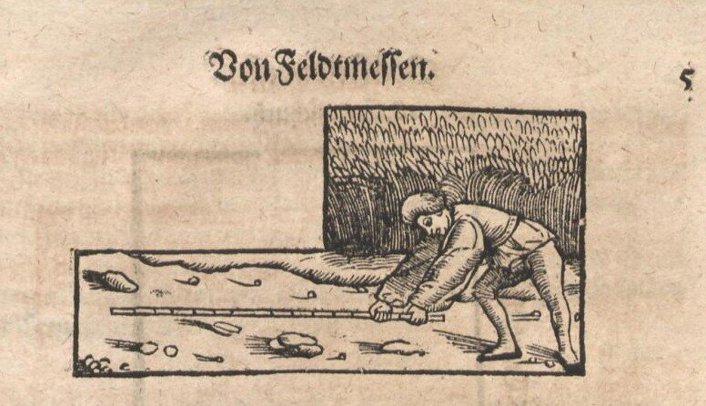

В ногах правды нет
(предупреждение предков)

Ввиду того, что при обсуждении предыдущих заметок о футе возникло несколько вопросов, требующих более тщательного освещения, хочу сделать это в отдельных постах.
catherine_catty и _sasa поставили вопрос, на который я не смог ответить: кого при выходе из церкви включали в группу людей для определения длины мерного инструмента («штока»), а также производили измерения их ног обутыми или бедолаг разували. Они выразили сомнение, что в эту группу включали женщин и детей. Видимо их сомнения имеют под собой основания. Мне удалось найти первоисточник описания упомянутой процедуры. Это книга Якоба Кёбеля «Геометрия» (Jakob Köbel: Geometrey), впервые изданная во Франкфурте в 1535 г. Кёбель в 1490-е годы учился в Краковском университете вместе с Коперником, затем работал в качестве учителя арифметики, увлекся гравюрой и книгоизданием. Слыл неплохим поэтом.
Вот титульный лист этой книги 1598 года издания.

Интересующий нас текст, насколько я смог разобраться с готикой, гласит:
Ein Meßrute nach rechter Art vnd künstlichem gemeinẽ Gebrauch sol also gemacht werden. Es sollen sechtzehen mann / klein vnd groß / wie die vngefehrlich nach einander auß der Kirchen gehẽ / ein jeder vor den andern einen Schuch stellen / vnnd damit ein Lenge / die da gerad sechtzehen derselben Schuch begreiffet / messen / Dieselbige Lenge ist / vnd sol seyn / ein gerecht / gemein Meßrute / damit man das Feldt messen soll /
Перевод, в принципе, не сложен, но я воздержусь от буквального перевода всего отрывка, ибо в немецком, тем более из книги пятивековой давности, я не специалист. Интересующее нас место:
Измерительный стержень для измерения земельных участков и общественного использования может быть изготовлен следующим образом. Шестнадцать человек (маленьких и больших) (mann / klein vnd groß /) выходящих из церкви становятся в ряд таким образом, что их ботинки касаются друг друга. Полученное расстояние и есть длина линейки для измерения полей.
Здесь действительно употреблено слово mann, а на сопровождающей гравюре видно, что это мужчины.
Приведем для полноты также гравюру, показывающую исплользование этого инструмента на практике.

Длина получившейся линейки, как подсчитано, равнялась примерно 4,88 м. А ее шестнадцатая часть (30,5 см) называлась Fuß – фут.